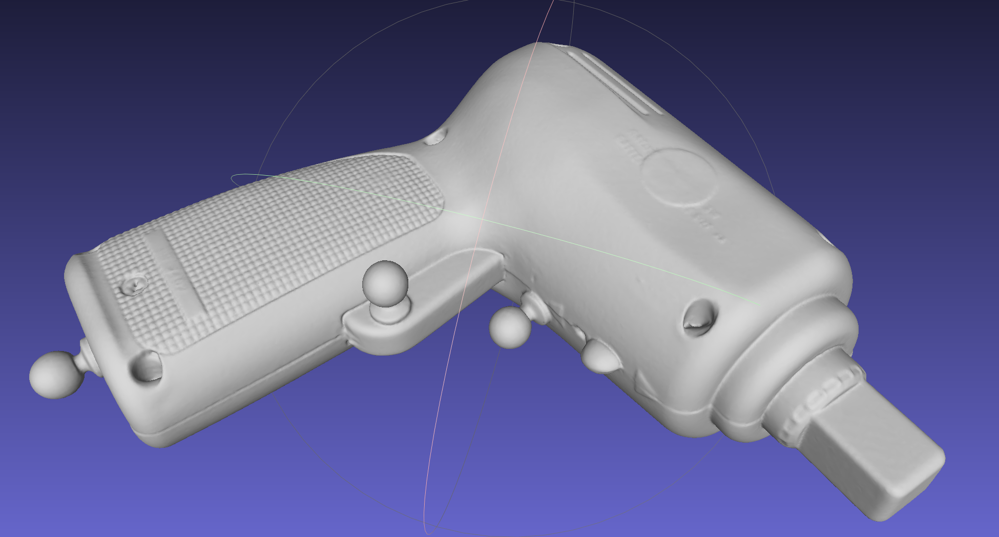
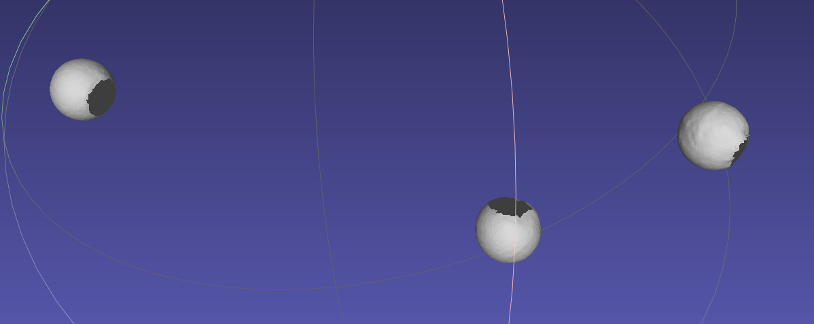

Adding a New Object
Scanning guidelines
Make sure the motion capture markers are attached to the object before the scan! At least 3 spherical markers have to be attached to the physical object before the scan.
We used Artec Spider scanner for most of our models; this scanners is a good choice for relatively small objects, although larger objects may require a different scanner. It is very important to accurately capture the shape and locations of motion capture markers!
evimo supports both pointcloud and meshed scans. Note that with no meshing there will be visible ‘holes’ during data generation. You can use meshlab or similar software to mesh pointclouds if the scanning software does not have this feature.
The meshed scan with markers clearly visible:

Markers cut out of the scan (all 3 separate scans are visualized together):

Create configuration files
In objects folder create a subfolder with the desired object name; this name will only be needed when running the tool later on, it will not be propagated to ground truth.
The coordinates of at least 3 motion capture markers (within the scan) need to be supplied to evimo; we use a very primitive process to do that:
Manually edit the object scan and create separate files which only contain points for each marker; for each file you will need to know marker id associated with that marker when the model was registered with motion capture system.
In tools/cloud_converters run
makeand then./text_scan2cloud -in ../../evimo/objects/toy_00/1.ply -r -mmNote the last-mmflag: use it only in the model points are specified in millimetres (otherwise meters will be used).
Example output: Coefficients: (x, y, z):15.7866 -10.6652 2.4729
In objects/toy_00 (Here we will use ‘toy_00’ as an example object name) create two files:
config.txtandsettings.txt
config.txt (example)
Each line should contain 4 numbers separated by a whitespace: 1 15.7866 -10.6652 2.4729; the first number is the marker id registered with the motion capture system. The other 3 are the marker center coordinates acquired during the previous step. There should be at least 3 lines (for 3 markers) but there can be any number - the evimo will compute the least squares fit between the marker coordinates reported by the motion capture system during data recording and the configuration in this file. The marker ids do not have to be in order or sequential.
settings.txt (example)
Should have 5 lines of format key: value:
id: the numerical object id. The ground truth masks are populated with this number, so they should be unique for each object. If two objects have the same id the pixel values in the mask will be the same as well, but no error will be generated.name: any string (does not have to match the folder name); used mostly for debugging purposesmesh: the relative path to the mesh from the location of the configuration file. Can be ‘none’.unit:mmorm- specify which units should be used.ros_pos_topic: the ros topic with Vicon messages to listen to.
Note: The code responsible for parsing and handling this configuration can be found here